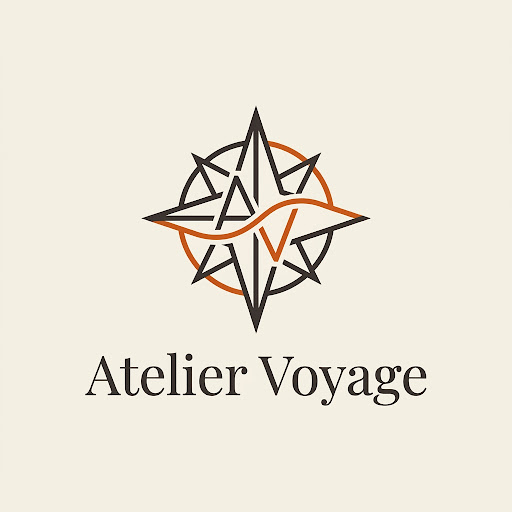
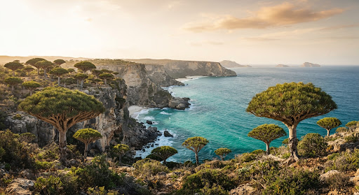
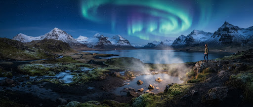
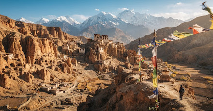
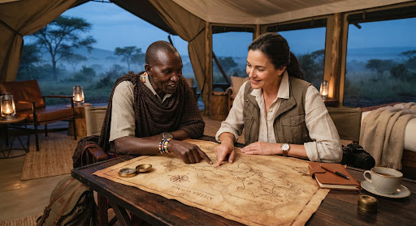

El arte de viajar hacia lo inexplorado
Curaduría exclusiva de travesías a rincones secretos del planeta, alejados del turismo y concebidos con precisión artesanal

ATELIER VOYAGECuraduría exclusiva de travesías a rincones secretos del planeta, alejados del turismo y concebidos con precisión artesanal
Territorios alejados de las rutas comerciales donde la geografía, el silencio y la majestuosidad natural permanecen intactos.

Adéntrese en una cápsula temporal geológica. Bosques milenarios de sangre de dragón, playas desiertas de dunas blancas y endemismos botánicos bajo la custodia de un biólogo local exclusivo para su grupo privado.

Silencio geotérmico absoluto, fuentes termales ocultas y auroras boreales vírgenes sin contaminación lumínica. Estancia en cabañas de autor con chef privado.

Misticismo tibetano preservado en el corazón del Himalaya. Acceso restringido a monasterios del siglo VIII y audencias exclusivas con ancianos de la realiza local.
Cuidamos cada matiz de su travesía con un estándar de discreción, excelencia y confort sin precedentes para que solo habite el asombro.
Diseño milimétricos adaptado a su ritmos, pasiones e intereses personales, creando narrativas de viaje irrepetibles y libres de cualquier itinerario estandarizado.
SESIÓN 1 A 1 DE DISEÑOAcceso a eco-lodges remotos, villas privadas de autor y fletamento de aviación privada para llegar con agilidad a pistas inaccesibles para vuelos comerciales.
PRIVACIDAD Y CONFORT TOTALAcompañamiento por naturalistas de renombre, arqueólogos e historiadores autóctonos que abren puertas vetadas y comparten sabiduría viva in situ.
CONEXIÓN HUMANA AUTÉNTICAAsistencia dedicada y discreta en tiempo real desde el primer despegue hasta su regreso. Coordinación satelital y contingencias resueltas de inmediato.
MONITOREO PERMANENTE"El verdadero viaje no consiste en buscar nuevos paisajes, sino en mirar con ojos inéditos lo que aún permanece incontaminado."
Nacimos de la convicción de que al verdadero lujo reside en la autenticidad, la soledad contemplativa y la conexión íntima con lugares que aún conservan un misterio original. No vendemos paquetes turísticos; esculpimos vivencias memorables con un compromiso inquebrantable hacia la conservación local y las comunidades anfitrionas.

"Una expedición con Atelier no se cuenta: se decanta en la memoria durante años."
Miembro Privado desde 2021Comparta su visión de viaje. Un curador especializado se pondrá en contacto en moenos de 24 horas para una sesión de diseño personalizada.